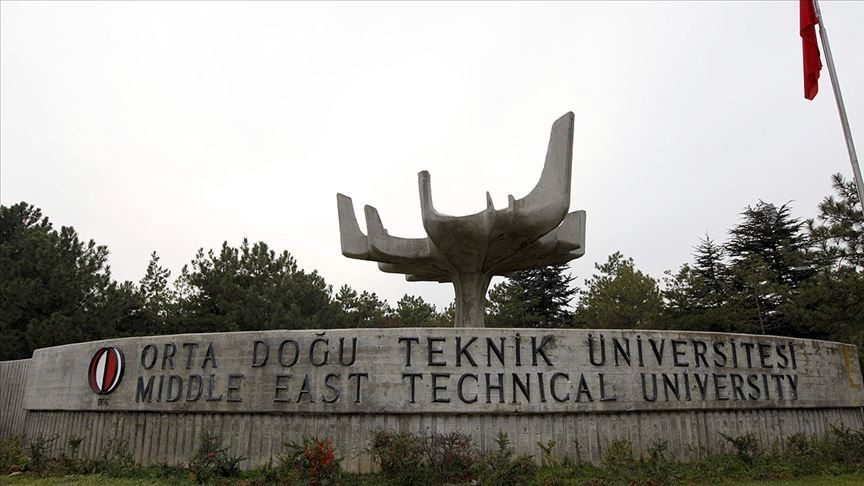

METU(Middle East Technical University)
General Information
Middle East Technical University (METU), a state university founded in 1956, currently has about 27,000 students. Undergraduate and graduate students from many countries attend a semester or a year-round at METU as "Special Student" or "Exchange Student". Middle East Technical University is currently conducting Student Exchange Program activities with many universities around the world. The language of instruction at METU is English. METU has 41 undergraduate programs within 5 faculties. Additionally, there are 5 Graduate Schools with 105 masters and 70 doctorate programs and a "School of Foreign Languages" which includes the English Preparatory Department. 15 undergraduate programs and 5 graduate programs are offered at METU Northern Cyprus Campus.
Campus
The METU Campus is located on the Ankara-Eskişehir highway and has been forested entirely through the efforts of the University employees and students since the early 1960's. The Campus includes Lake Eymir. The lake and its surroundings meet part of the rowing, fishing and picnicking needs of the METU employees and students. The surroundings of Lake Eymir have also been forested through the efforts of the University employees and students. The fresh water for METU is being supplied from the deep wells around Lake Eymir.
Accommodation
There are 18 modern dormitories within the University Campus. Computer laboratories are available 24 hours for students residing at dormitories. Internet connection and wired telephone service is available at dormitory rooms. There are studying rooms at the dormitories. Students can also find rooms where they can study drawing and design for technical courses. The conveniences at every dormitory include TV Rooms, food shops and modern kitchens where students are able to cook their own meals. Automatic dispenser machines provide hot drinks like tea and coffee, biscuit/crackers and various beverages. There are adequate numbers of automatic washing machines, driers, irons and ironing desks at the dorms. Older sheets are replaced with clean ones every two weeks. Hot water service is available 24 hours. There is a shopping center in the campus where students can do shopping and find all sorts of products and services they need. There are branches of various banks at the center of campus as well. In the area where dormitories are located, the students can find sports facilities as well as the places for outdoor sports activities such as fields for football and basketball, tennis courts, indoor and outdoor pools, sports halls etc..
Transportation
There are buses and minibuses operating between the city center and the dormitories between the hours 07.00 and 24.00. Besides, there also are ring busses that operate between dormitories and departments.
Address
Middle East Technical University Üniversiteler Mahallesi, Dumlupınar Bulvarı No:1 06800 Çankaya Ankara/TURKEY